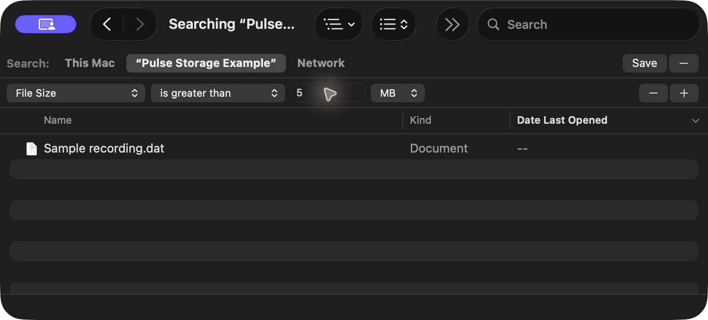
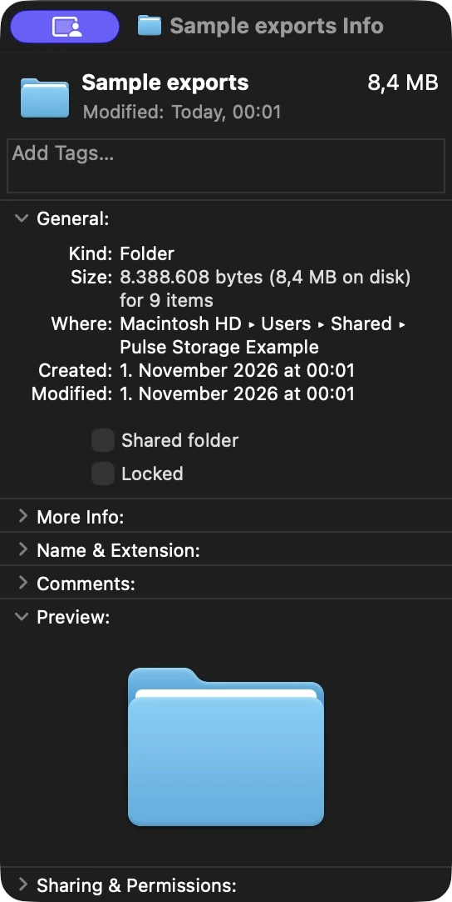
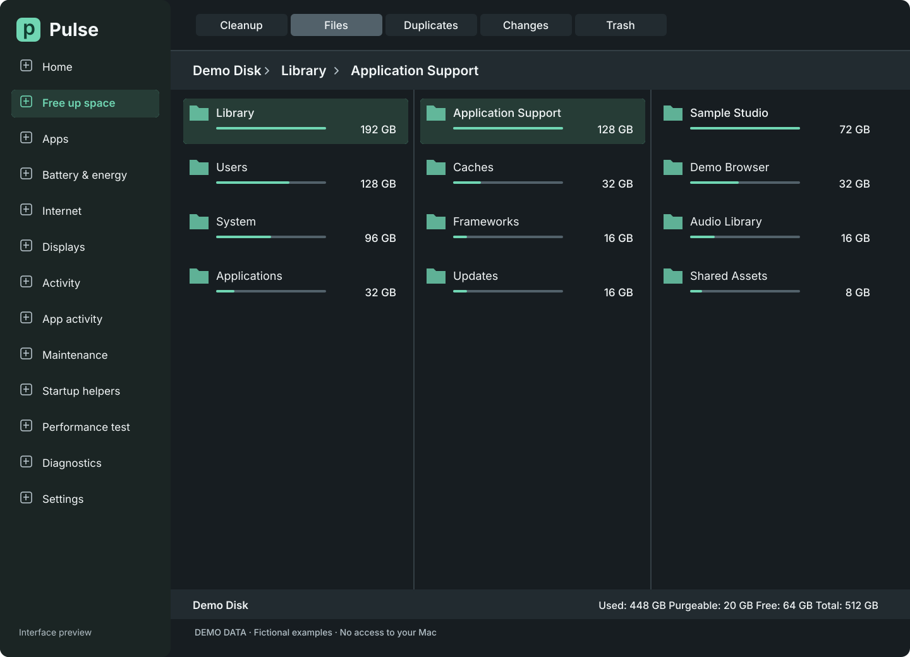

1. Get the storage picture.
Your Mac says it’s nearly full, but the colored bar doesn’t tell you what to do. Treat that bar as a map. Your first job is to find a useful place to look.
- Open the Apple menu → System Settings → General → Storage.
- Let the categories finish calculating. Note the available space as your starting point.
- Look for a large category with an info button. Open it to see its options. Some categories send you to the app that manages their files.
Apple documents this starting point in Free up storage space on Mac.
For personal files, open Documents. In our macOS check, it offered Large Files, Downloads and File Browser. Use Size to compare files; use File Browser to follow folders. [1]
Inspect first. Storage settings can offer permanent deletion. Use Show in Finder when available to understand an item before choosing what to do.
2. Find the big individual files.
A recording, an old installer or a downloaded archive can use more space than thousands of documents. Finder can narrow the search for you.
- Open a Finder window and press ⌘ F (Command-F).
- Choose This Mac for a broad search, or choose the folder name to search just that folder. Leave the text search empty if you want files of any name.
- On a search-criteria row, open Kind → Other…, find File Size, select it and click OK. Click + if a criteria row isn’t visible.
- Set File Size → is greater than → 1 → GB. Lower the threshold to 100 MB if needed. These are starting points, not cleanup targets.
The attribute picker and criteria workflow are described in Apple’s Finder search guide; the File Size control was checked locally.

- Choose the scope. This example searches only the sample folder.
- Set a threshold. The number and unit work together: 5 MB here, 1 GB for a broader first pass.
No results doesn’t mean no large files. Check the scope, try a lower threshold and remember that Finder search depends on what is indexed and included in search. It isn’t a complete inventory of your disk. [3]
3. Look for small files that add up.
This is the step a file-size search can’t do for you. A folder can be large even when none of its individual files crosses your threshold.
Small files.
A larger total.
8.4 MB in our sample folder
Our Sample exports folder contains eight small sample files. None matched the “larger than 5 MB” search. Together, Finder reported an 8.4 MB folder. The same pattern can happen at a much larger scale.
Ask Finder for the folder’s total.
- Browse to a folder you recognize, such as Downloads, Documents or Movies.
- Select one folder, then choose File → Get Info or press ⌘ I.
- Read Size under General. Give large folders time to calculate. Open the folder and repeat to follow the space further.
If list view shows — for a folder’s size, that isn’t a zero. Get Info can still show its total.

Apple explains Get Info and file/folder information. The workflow and sample total were checked on this Mac.
4. “System Data” is a category, not a folder.
It’s tempting to look for one thing called System Data and remove it. Apple uses the label for files that don’t fit its other categories. Some are managed by macOS; some belong to apps. The number alone doesn’t tell you what is disposable. [1]
- System Data is large
- Continue investigating recognizable files and app-managed storage. Don’t delete unfamiliar Library or system folders just to reduce the category.
- The numbers don’t add up neatly
- Categories, search results and folder totals measure different views. Available storage can include purgeable space; a file search may leave things out. Avoid treating their totals as interchangeable. [1]
- You use Time Machine
- Local snapshots are managed automatically and their space counts as available. You don’t need to remove them as a routine first step. [5]
5. Choose one action you understand.
Finding a large item is a clue, not a recommendation to delete it. Ask: What is it? Do I still need it? Where else is it saved?
| You found | A useful next step |
|---|---|
| A personal download or recording | Open or preview it. Keep it, make a verified copy elsewhere, or move it to Trash if you no longer need it. |
| A photo library, backup or app data | Use that app’s storage controls or its documented move/removal instructions. Don’t pull pieces out of its folders. |
| A file in iCloud Drive | Deleting it can remove it from other synced devices. If the goal is just local space, check the cloud service’s local-download controls first. [6] |
| Something you don’t recognize | Leave it in place and identify its owner or purpose before acting. |
Trash is a review step. Moving a file there doesn’t reclaim its space yet. Emptying Trash permanently removes those items. Check what’s inside and keep a backup of anything you might need. [7]
After an intentional change, return to Storage and let it update. Compare available space with your starting point. Removing files can help with storage; it doesn’t prove your Mac or an app is faster.
Prefer to follow the folders in one view?
That’s the idea behind Pulse’s storage explorer: compare folder sizes, open the next level and keep the path in view as you investigate.

Pulse is in development. The steps above work today with the tools already on your Mac.
Explore Pulse’s storage viewKnow when Pulse is ready.
Join the early-access list for product updates and opportunities to try Pulse. No payment to join.
Join early accessContinue to our signup form, then confirm your email to join.
Early-access invitations and occasional updates. Unsubscribe at any time.
The form is hosted by MailerLite. How signup information is used.
Sources & checks
Written by Pulse. Mac controls were checked on macOS Tahoe 26.5.1 using disposable sample files. Finder screenshots show those files only; no personal files were deleted and Trash was not emptied. Labels can vary with macOS version and language.
- Apple: Find and delete files on your Mac — category controls, System Data and storage definitions.
- Apple: Narrow your search results in Finder — search attributes and criteria.
- Apple: If searching your Mac returns unexpected results — scope, exclusions and indexing.
- Apple: Get file, folder and disk information — inspecting an item.
- Apple: About Time Machine local snapshots — automatic management and available storage.
- Apple: Work with folders and files in iCloud Drive — local-download controls. Apple: Desktop and Documents in iCloud Drive explains deletion across synced devices.
- Apple: Delete files and folders — Trash, backups and permanent deletion.